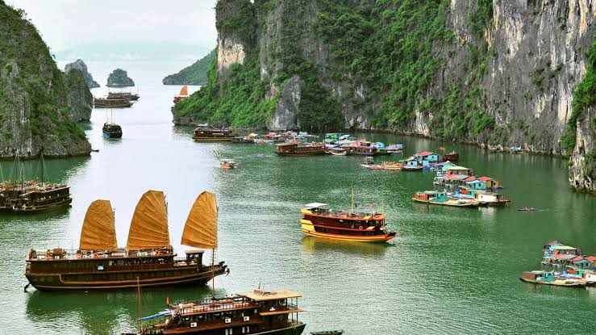

Vịnh Hạ Long

Vịnh Hạ Long là một trong những kỳ quan thiên nhiên độc đáo và hùng vĩ bậc nhất thế giới, tọa lạc tại Quảng Ninh, Việt Nam. Nơi đây mê hoặc du khách bởi hàng nghìn hòn đảo đá vôi muôn hình vạn trạng nhô lên từ làn nước xanh ngọc bích phẳng lặng, tạo nên một bức tranh thủy mặc khổng lồ và sống động.
Sự hòa quyện tuyệt mỹ giữa mây trời, non nước và những cánh buồm thơ mộng đã biến Hạ Long thành biểu tượng du lịch đầy tự hào trên bản đồ quốc tế.